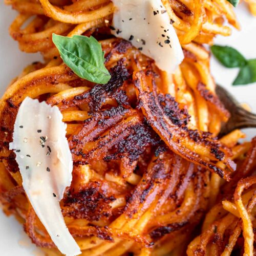

Easy Fried Spaghetti

Make fresh or fry your leftover spaghetti for a super easy,
quick and delicious meal. Just add fontina and parmesan,
fry in a little butter to get crispy edges and crispy
cheese then top with fresh basil for a yummy meal
that the whole family will love!
Ingredients
Spaghetti
- 8 oz spaghetti dry
- 4 qt water for boiling pasta
- 1 tbsp kosher salt for pasta water
- drizzle olive oil for pasta water
Sauce
- 1 drizzle olive oil
- 3 cloves garlic minced
- 1/2 tsp kosher salt
- 1/2 tsp dried oregano
- 1/4 tsp coarse ground black pepper
- 1/4tsp crushed red pepper
- 24 oz marinara sauce
Cheese
- 5oz fontina shredded
- 3 oz parmesan
Finishing Ingredients
- 2 tbsp unsalted butter
- 3/4 oz fresh basil chiffonade
Instructions
Cooking the Spaghetti
- Bring the water, salt, and oil
to a boil, then add the spaghetti
noodles and cook according to package
instructions for aldented noodles.
- Drain and set to the side.
Making the Sauce
- Heat a drizzle of olive oil over low
heat in the same pot the noodles were cooked
in. Add the garlic and stir around until
fragrant, about 20 seconds.
- Add the salt, oregano, black and red pepper.
Stiranother 20 seconds.
- Add the jar of sauce and mix well, then mix in
the cooked spaghetti. Remove from the heat.
Adding Cheese
- Mix both shredded cheeses into the spaghetti.
Frying the Spaghetti
- Heat a large skillet over medium-high heat just
until hot, thenturn heat to medium. Melt butter
then add spaghetti in one even layer across the
bottom of the pan.
- Fry for 3-4 minutes then flip and repeat to the
second side.
- Serve spaghetti on a plate and top with fresh
basil. Serve immediately.